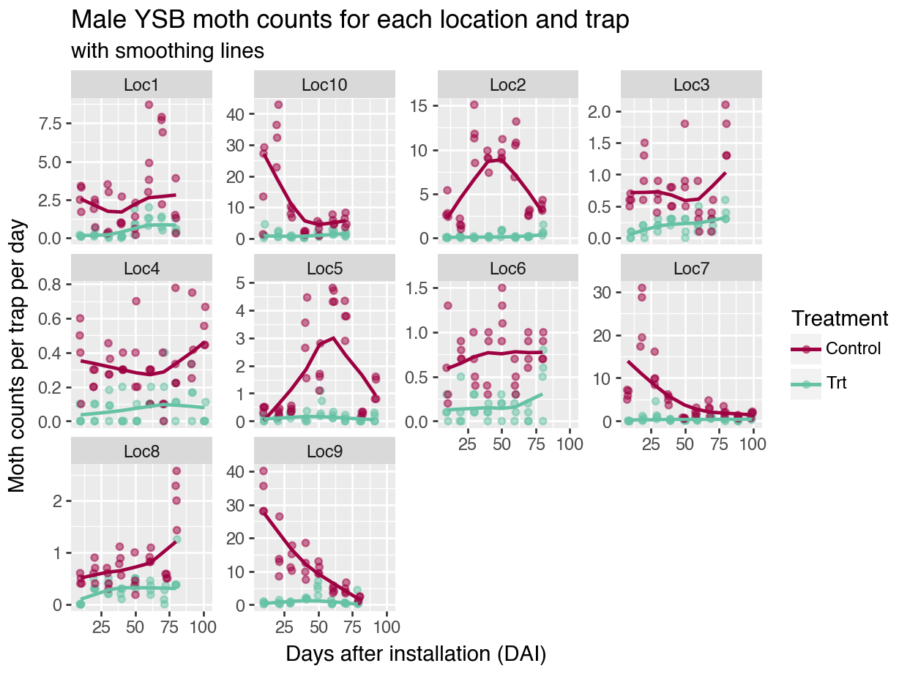
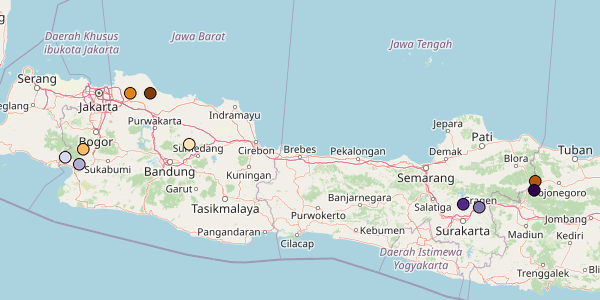
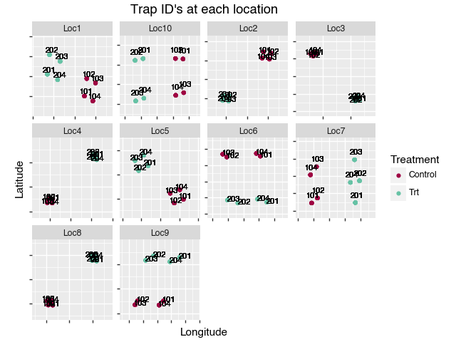
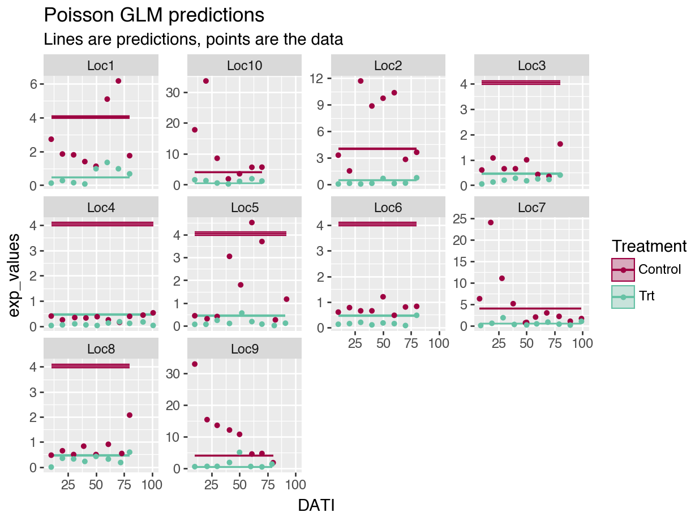
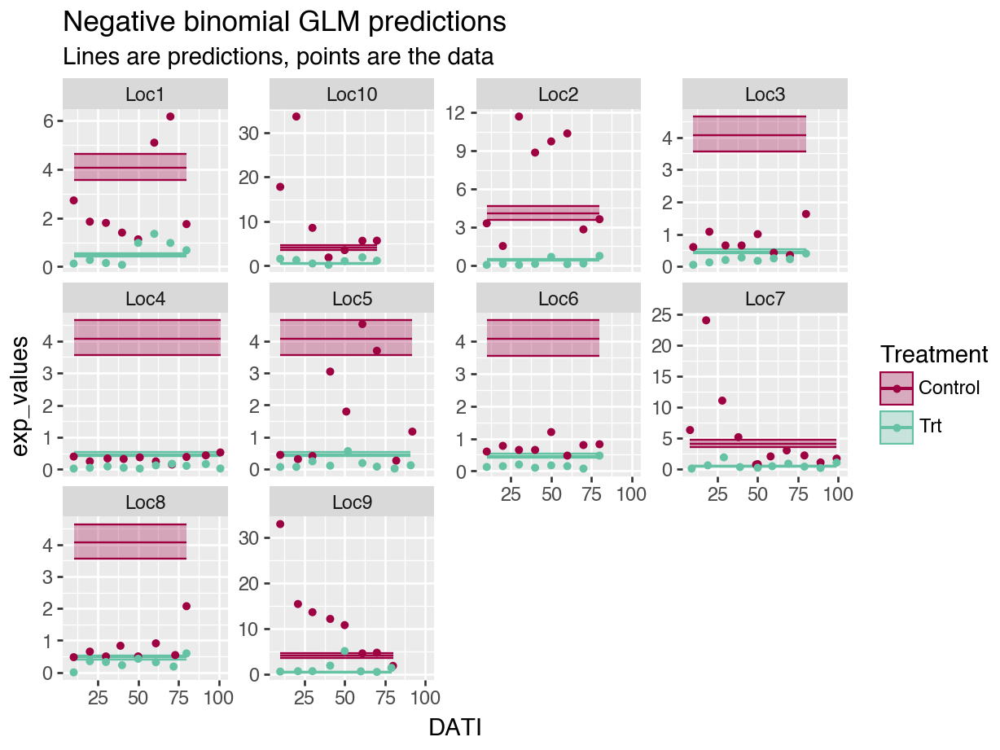

Chapter 4 GLMM’s in Python
4.1 Getting started with Python
Python is a lot more complicated than R!
Download Python.
Decide how you want to interact with Python. Yes, you can technically use the terminal and use Python directly, but a GUI is preferable so that it is easier to run the code, add comments, view the output, etc. This is even more true for Python than it is for R.
Originally, I downloaded Jupyter Notebook directly, but I didn’t like the way things loaded. So, I downloaded “Anaconda” and then accessed Jupyter from there. However, I still don’t love Jupyter– the notebooks don’t optimize the screen’s size like RStudio does. In RStudio, I love having my code on one side of the screen, and my outputs on the other. Screens are wide, not long.
Soon, I came across the “reticulate” package, which allows for Python coding in an Rmarkdown script! So far, awesome and it is how I run the all the analyses. Here, I switch between R and Python code chunks, but the package also allows objects written in one language to be used within both languages. Pretty cool. It’s not for production-level code, but seems perfect for R users switching to Python.
To interact with Python via RMarkdowns in RStudio, check out the reticulate package website.
Here is another helpful link: Primer on Python for R users
- Set up a Python environment for your work. (Second code chunk in the setup.) Here is why that is important:
Python environments: “When installing Python packages it’s best practice to isolate them within a Python environment (a named Python installation that exists for a specific project or purpose). This provides a measure of isolation, so that updating a Python package for one project doesn’t impact other projects. The risk for package incompatibilities is significantly higher with Python packages than it is with R packages, because unlike CRAN, PyPI does not enforce, or even check, if the current versions of packages currently available are compatible.” https://rstudio.github.io/reticulate/articles/python_packages.html
Anaconda and reticulate both help the user keep specific environments for each Python “project” that one may be working on.
A Python virtual environment is a basic tool to isolate project dependencies within a Python installation, while a Conda environment is a more comprehensive package manager that not only creates isolated environments but also allows for managing complex dependencies across different programming languages. To keep things simpler, I use a Python virtual environment.
- Install Python modules as needed.
Python libraries or packages are called modules. To use them with reticulate, you first have to import them (third code chunk). The lines in the third code chunk below must be called exactly once each for each new python module used; it does not need to re-run.
4.2 Setup
As in the R chapters, all modules (i.e., packages) are loaded and the data are uploaded and mainpulated at the start of the script. The “Getting started with Python” section above goes into details on the rhyme and reason for some of these code chunks.
Because I am newer to Python, the required modules are often included in the code chunks as well as a reminder of what modules are used for what functions. They are included in the setup to ensure that there are no issues upon loading.
knitr::opts_chunk$set(cache = F, message = F, warning = F,
out.width = '100%')
library(kableExtra) # to make a pretty table
library(tidyverse) # %>% function, and others
library(reticulate) # library to use Python within R
use_virtualenv("r-reticulate-BayesInPython")
# make sure these packages are installed before installing pymer4:
# install.packages(c("lme4", "lmerTest", "emmeans"))
# Ensure pymer4 is installed in the desired Python environment
# py_require("pymer4")## Uncomment the code below and run once, the first time you work through the tutorial:
# create a new environment
# virtualenv_create("r-reticulate-BayesInPython")
#
# # install a module
# virtualenv_install("r-reticulate-BayesInPython", "pandas")
#
# indicate that we want to use a specific virtualenv
# use_virtualenv("r-reticulate-BayesInPython")
#
## (Uncomment this code instead if you prefer a Conda environment)
# # create a new environment
# conda_create("r-reticulate-BayesInPython")
#
# # install a module, e.g., SciPy
# conda_install("r-reticulate-BayesInPython", "scipy")
#
# # indicate that we want to use a specific condaenv
# use_condaenv("r-reticulate-BayesInPython")## Install modules if you have not used them before
# You may have to install the packages if you have not used them before:
# code chunk is here for easy retrieval
# replace module name as needed.
!pip install staticmap
# installing googlemaps needs a modification:
# !pip install --use-pep517 googlemaps
# to install pymer4, you need to type the following commands from Terminal:
# I think you need Anaconda installed
## https://eshinjolly.com/pymer4/installation.html
# conda create --name pymer4 -c ejolly -c conda-forge -c defaults pymer4
# conda activate pymer4import pandas as pd
import numpy as np
import pprint
from staticmap import StaticMap, CircleMarker # plot trap locations on a map
import arviz as az
import matplotlib.pyplot as plt
from formulae import design_matrices
import patsy # for dmatrix function
from plotnine import * # using ggplot in Python
import seaborn as sns
import os # save API key in .env file
import gmplot ## ggmap
from patsy import dmatrices # for dmatrices function
import statsmodels.api as sm # for regressions
import math
from scipy.stats import nbinom
import bambi as bmb
import pymc as pm
import pickle # to write, read python objects to file
mycolors = ["#9E0142", "#66C2A5"]## Define some functions to use in this script.
# calculate trapping reduction for frequentist model fits.
def getTR(mod):
"""Calculate TR with confidence interval for stats model"""
# Function body
import pandas as pd
b1 = mod.params.iloc[1]
seb1 = mod.bse.iloc[1]
outTR = {'TR': [round(100 * 1 - math.exp(b1))],
'lowerCI': [round(100 * 1 - math.exp(b1 + 1.96*seb1))],
'upperCI': [round(100 * 1 - math.exp(b1 - 1.96*seb1))]}
df = pd.DataFrame(outTR)
return df## Read in the moth data:
import pandas as pd
datP = pd.read_csv("data/moths.csv", delimiter = ",")
# check data values:
# (Results not shown for succinctness)
datP.info()pd.set_option('display.max_columns', None) # Display all columns
datP.describe(percentiles=[0.5], include = 'all')
for col in datP:
if (datP[col].dtype == 'object'):
print(col)
print(datP[col].unique())## manipulate data as needed:
# convert dates to dates in case further manipulation on them is needed:
# but first keep object version of samplingdate:
datP['SamplingDateC'] = datP['SamplingDate']
cols = ['TransplantDate', 'DispInstallDate', 'TrapInstallDate', 'SamplingDate']
for col in cols:
datP[col] = pd.to_datetime(datP[col])
datP['SamplingDate'].describe()# standardize the counts
datP['mothsperday'] = datP['nYSB'] / datP['DaysOfCatch']
# un-comment if we need to fix levels in non-alpha order
# datR <- datP %>%
# mutate(TreatmentF = factor(Treatment),
# LocationF = as.factor(Location),
## average counts for each location, date
mean_cts = datP.groupby(['Location', 'Treatment', 'AssessmentNumber', 'SamplingDate', 'SamplingDateC', 'DATI'], as_index=False).agg({'nYSB': 'mean', 'mothsperday': 'mean'})
mean_cts.describe(include='all')4.3 Data exploration
4.3.1 The data
Here is what the data look like after the above manipulation.
# kable(head(datR, 5)) %>%
# kable_styling() %>%
# scroll_box(width = "100%", box_css = "border: 0px;")
# convert to DF to make a pretty table:
py_df = pd.DataFrame(datP)
# print(datP.head(5))kable(head(py$datP, 5)) %>%
kable_styling() %>%
scroll_box(width = "100%", box_css = "border: 0px;")| Location | Treatment | TrapID | Longitude | Latitude | TransplantDate | TrapInstallDate | DispInstallDate | AssessmentNumber | SamplingDate | nYSB | DaysOfCatch | DATI | DADI | DAT | SamplingDateC | mothsperday |
|---|---|---|---|---|---|---|---|---|---|---|---|---|---|---|---|---|
| Loc9 | Trt | 201 | 111.6028 | -7.233634 | 2023-08-05 18:00:00 | 2023-08-12 18:00:00 | 2023-08-12 18:00:00 | 1 | 2023-08-22 18:00:00 | 4 | 10 | 10 | 10 | 17 | 2023-08-23 | 0.4000000 |
| Loc9 | Trt | 201 | 111.6028 | -7.233634 | 2023-08-05 18:00:00 | 2023-08-12 18:00:00 | 2023-08-12 18:00:00 | 2 | 2023-09-02 18:00:00 | 6 | 11 | 21 | 21 | 28 | 2023-09-03 | 0.5454545 |
| Loc9 | Trt | 201 | 111.6028 | -7.233634 | 2023-08-05 18:00:00 | 2023-08-12 18:00:00 | 2023-08-12 18:00:00 | 3 | 2023-09-11 18:00:00 | 6 | 9 | 30 | 30 | 37 | 2023-09-12 | 0.6666667 |
| Loc9 | Trt | 201 | 111.6028 | -7.233634 | 2023-08-05 18:00:00 | 2023-08-12 18:00:00 | 2023-08-12 18:00:00 | 4 | 2023-09-22 18:00:00 | 24 | 11 | 41 | 41 | 48 | 2023-09-23 | 2.1818182 |
| Loc9 | Trt | 201 | 111.6028 | -7.233634 | 2023-08-05 18:00:00 | 2023-08-12 18:00:00 | 2023-08-12 18:00:00 | 5 | 2023-10-01 18:00:00 | 43 | 9 | 50 | 50 | 57 | 2023-10-02 | 4.7777778 |
Column descriptions:
Location– data were collected from 10 trial locations,
Treatment– Control or Treatment (Trt),
TrapID– each trap within a trial location has a unique ID,
Longitude, Latitude– the coordinates of each unique trap,
TransplantDate– the date that the rice seedlings were transplanted into the field,
TrapInstallDate– the trap installation date, which is usually the same as the dispenser installation date,
DispInstallDate– the treatment (pheromone dispenser) installation date;
AssessmentNumber– traps are sampled 10 times each. Using assessment number is a way to standardize the sampling dates across locations,
SamplingDate– the date on which the trap was checked and moths were counted,
nYSB– the moth counts (number of YSB moths) associated with each trap, location, and date,
DaysOfCatch– the number of days since the trap was previously sampled or the number of days since trap installation if it is assessment number 1,
DATI is days after trap installation;
DADI– days after dispenser installation; and
DAT– days after transplant.
mothsperday– moths caught per day, nYSB / DaysOfCatch, and
SamplingDateC– Sampling Date as a character/string (for model in Section \(ref?)(glmm_datesC)),
4.3.2 Moth counts plotted
The data are the moth counts collected at each trap (average per day), within each location and throughout the season. Note how the y-axis changes for each plot in the figure.
The plotnine module allows us to use ggplot2 package in Python. It is fantastic to quickly make a beautiful plot using previously acquired R skills, and it does so with a fraction of the code required to make a similar figure using Python’s seaborn and/or matplotlib modules.
from plotnine import * # using ggplot in Python
import matplotlib.pyplot as plt
pmoths = (ggplot(datP, aes(x = 'DATI', y='mothsperday', color = 'Treatment')) +
geom_jitter(height = 0, width = 0.75, alpha = 0.5) +
geom_smooth(se=False) +
facet_wrap(['Location'], scales = "free_y") +
scale_color_manual(values = mycolors) +
labs(title = "Male YSB moth counts for each location and trap",
subtitle = "with smoothing lines",
y = "Moth counts per trap per day",
x = "Days after installation (DAI)",
color = "Treatment"))
pmoths.draw(True)
4.3.3 Trap locations
Trial locations in relation to each other. Some trial locations are closer to each other than others.
## average coords for each location
loc_coords = datP.groupby(['Location'], as_index=False).agg({'Latitude': 'mean', 'Longitude': 'mean'})
colors = ["#7F3B08", "#B35806", "#E08214", "#FDB863", "#FEE0B6", "#D8DAEB", "#B2ABD2", "#8073AC", "#542788", "#2D004B"]
m = StaticMap(600, 300)
for i in range(0, len(loc_coords["Longitude"])):
# add outline first to make points easier to see:
m.add_marker(CircleMarker((loc_coords["Longitude"][i], loc_coords["Latitude"][i]), "black", 12))
m.add_marker(CircleMarker((loc_coords["Longitude"][i], loc_coords["Latitude"][i]), colors[i], 10))
image = m.render(zoom=7)
image.save('output/trial_locs.png')
Figure 4.1: Example trial locations.
Within each location, the treatment traps have a slightly different alignment:
coords = datP[['Location', 'Treatment', 'TrapID', 'Latitude', 'Longitude']].drop_duplicates()
# coords.describe(include = 'all')
pcoords = (ggplot(datP, aes(x = 'Longitude', y='Latitude', color = 'Treatment')) +
geom_point() +
facet_wrap(['Location'], scales = "free") +
scale_color_manual(values = mycolors) +
theme(aspect_ratio=1,
axis_text_x=element_blank(),
axis_text_y=element_blank()) +
geom_text(aes(label = 'TrapID'), nudge_x = 0.0002, nudge_y = 0.0002, color = "black", size = 8) +
scale_x_continuous(expand = (0.3, 0)) +
scale_y_continuous(expand = (0.3, 0)) +
labs(title = "Trap ID's at each location"))
pcoords.save("output/traplocs.png")
Figure 4.2: Example trial locations.
4.4 Fitted GLM models
To start, we ignore all the spatial and temporal relationships in the data and assume each data point is independent and identically distributed (iid). This is not a good model for the data! It is just our starting off point.
When building hierarchical Bayesian models, it is always a good idea to start simple, make sure everything works as expected, and then build up.
See Section 2.1 for the associated mathematical models.
4.4.1 Frequentist Poisson model
These models show a very tight confidence intervals for our coefficient estimates and our predictions. But also, the residual deviance is MUCH greater than the degree of freedom, indicating a lack of fit. The plot of the predictions (Figure 3.1) overlaid on the data also demonstrate the lack of fit.
import numpy as np
from patsy import dmatrices # for dmatrices function
import statsmodels.api as sm # for regressions
import math
# POISSON regression
form = """ nYSB ~ Treatment"""
y, X = dmatrices(form, datP, return_type = 'dataframe')
mod1p = sm.GLM(y, X,
offset=np.log(datP["DaysOfCatch"]),
family = sm.families.Poisson())
results1p = mod1p.fit()
print(results1p.summary())## Generalized Linear Model Regression Results
## ==============================================================================
## Dep. Variable: nYSB No. Observations: 672
## Model: GLM Df Residuals: 670
## Model Family: Poisson Df Model: 1
## Link Function: Log Scale: 1.0000
## Method: IRLS Log-Likelihood: -14034.
## Date: Thu, 03 Jul 2025 Deviance: 25678.
## Time: 21:35:32 Pearson chi2: 4.24e+04
## No. Iterations: 6 Pseudo R-squ. (CS): 1.000
## Covariance Type: nonrobust
## ====================================================================================
## coef std err z P>|z| [0.025 0.975]
## ------------------------------------------------------------------------------------
## Intercept 1.3960 0.009 162.829 0.000 1.379 1.413
## Treatment[T.Trt] -2.1665 0.027 -80.933 0.000 -2.219 -2.114
## ====================================================================================## obtain TR estimate for comparison later (custom function in Setup code)
TR_1p = getTR(results1p)
print(TR_1p)## TR lowerCI upperCI
## 0 100 100 100Note: when I predict for new data, I set \(DaysOfCatch = 1\), and then I compare to the moths per day variable (\(mothsperday = nYSB / DaysOfCatch\)). I want to exclude any patterns related to the varying time intervals.
# predict from poisson regression:
preds1p = results1p.get_prediction(X, which = 'linear')
preds1pDFtmp = preds1p.summary_frame() #summary_frame() returns a pandas DF
preds1pDFtmp.describe()## predicted se ci_lower ci_upper
## count 672.000000 672.000000 672.000000 672.000000
## mean 0.312790 0.016966 0.279536 0.346043
## std 1.084062 0.008399 1.100524 1.067600
## min -0.770465 0.008574 -0.820168 -0.720762
## 25% -0.770465 0.008574 -0.820168 -0.720762
## 50% 0.312790 0.016966 0.279536 0.346043
## 75% 1.396045 0.025359 1.379241 1.412849
## max 1.396045 0.025359 1.379241 1.412849preds1pDF = datP
preds1pDF['exp_values'] = preds1pDFtmp['predicted'].apply(math.exp)
preds1pDF['lowerCI'] = preds1pDFtmp['ci_lower'].apply(math.exp)
preds1pDF['upperCI'] = preds1pDFtmp['ci_upper'].apply(math.exp)
## plot predicted and actual:
freqplot1p = (ggplot(preds1pDF,
aes(x = 'DATI', y='exp_values', color = 'Treatment')) +
geom_line() +
geom_ribbon(aes(ymin = 'lowerCI', ymax = 'upperCI', fill = 'Treatment'),
alpha = 0.3) +
geom_point(aes(x='DATI', y='mothsperday', color = 'Treatment'),
data = mean_cts, size = 1.1) +
facet_wrap(['Location'], scales = "free_y") +
scale_color_manual(values = mycolors) +
scale_fill_manual(values = mycolors) +
labs(title = "Poisson GLM predictions",
subtitle = "Lines are predictions, points are the data"))
freqplot1p.draw(True)
Figure 4.3: Poisson GLM predictions (Python).
The model is such a bad fit to the data, it is hard to even tell what is going on in the figure above.
4.4.2 Frequentist NB model
For the negative binomial (NB) model, our confidence intervals are a little wider, but we are still ignoring all the correlations in our data. And the plot of the predictions again indicates the lack of fit (Figure 4.4).
from scipy.stats import nbinom
form = """ nYSB ~ Treatment"""
y, X = dmatrices(form, datP, return_type = 'dataframe')
mod1nb = sm.NegativeBinomial(y,X, offset=np.log(datP["DaysOfCatch"]))
results1nb = mod1nb.fit()## Optimization terminated successfully.
## Current function value: 3.629123
## Iterations: 10
## Function evaluations: 11
## Gradient evaluations: 11## NegativeBinomial Regression Results
## ==============================================================================
## Dep. Variable: nYSB No. Observations: 672
## Model: NegativeBinomial Df Residuals: 670
## Method: MLE Df Model: 1
## Date: Thu, 03 Jul 2025 Pseudo R-squ.: 0.06445
## Time: 21:35:34 Log-Likelihood: -2438.8
## converged: True LL-Null: -2606.8
## Covariance Type: nonrobust LLR p-value: 4.739e-75
## ====================================================================================
## coef std err z P>|z| [0.025 0.975]
## ------------------------------------------------------------------------------------
## Intercept 1.4023 0.068 20.651 0.000 1.269 1.535
## Treatment[T.Trt] -2.1636 0.099 -21.863 0.000 -2.358 -1.970
## alpha 1.5244 0.082 18.628 0.000 1.364 1.685
## ====================================================================================## obtain TR estimate for comparison later (custom function in Setup code)
TR_1nb = getTR(results1nb)
print(TR_1nb)## TR lowerCI upperCI
## 0 100 100 100## code to predict moth counts from model:
preds1nb = results1nb.get_prediction(X, which = 'linear')
preds1nbDFtmp = preds1nb.summary_frame()
preds1nbDFtmp.describe()## predicted se ci_lower ci_upper
## count 672.000000 672.000000 672.000000 672.000000
## mean 0.320438 0.069947 0.183344 0.457531
## std 1.082628 0.002045 1.086637 1.078620
## min -0.761384 0.067903 -0.902484 -0.620285
## 25% -0.761384 0.067903 -0.902484 -0.620285
## 50% 0.320438 0.069947 0.183344 0.457531
## 75% 1.402260 0.071991 1.269172 1.535348
## max 1.402260 0.071991 1.269172 1.535348preds1nbDF = datP
preds1nbDF['exp_values'] = preds1nbDFtmp['predicted'].apply(math.exp)
preds1nbDF['lowerCI'] = preds1nbDFtmp['ci_lower'].apply(math.exp)
preds1nbDF['upperCI'] = preds1nbDFtmp['ci_upper'].apply(math.exp)
## plot predicted and actual:
freqplot1nb = (ggplot(preds1nbDF, aes(x = 'DATI', y='exp_values', color = 'Treatment')) +
geom_line() +
geom_ribbon(aes(ymin = 'lowerCI', ymax = 'upperCI', fill = 'Treatment'),
alpha = 0.3) +
geom_point(aes(x='DATI', y='mothsperday', color = 'Treatment'),
data = mean_cts, size = 1.1) +
facet_wrap(['Location'], scales = "free_y") +
scale_color_manual(values = mycolors) +
scale_fill_manual(values = mycolors) +
labs(title = "Negative binomial GLM predictions",
subtitle = "Lines are predictions, points are the data"))
freqplot1nb.draw(True)
Figure 4.4: Negative binomial GLM predictions (Python).
4.4.3 Bayesian (bambi) model
Bambi is the Python module that is very similar to brms package in R. I am pretty sure the defaults use different algorithms though (which may affect your results), so be sure to read up on the details of both! However, both run stan on the back-end for the MCMC algorithms.
Because the models take a few minutes to fit, I usually fit them when I am initially running through my code, save them, and then only load the model fit when rendering the Rmarkdown file and creating the resulting figures.
Bambi creates InferenceData objects. Read the reference guide– it is very helpful!
# https://bambinos.github.io/bambi/notebooks/negative_binomial.html
import bambi as bmb
## build the model:
model_bmb1nb = bmb.Model("nYSB ~ Treatment + offset(log(DaysOfCatch))",
datP, family="negativebinomial",
priors = {
"Intercept": bmb.Prior("Normal", mu = 0, sigma = 2),
"Treatment": bmb.Prior("Normal", mu = 0, sigma = 2),
"alpha": bmb.Prior("HalfCauchy", beta = 1)
})
filename = 'output/idata_bmb1nb.pkl'## not run
import bambi as bmb
## fit the model:
idata_bmb1nb = model_bmb1nb.fit(tune = 500, draws=2000, chains=6, random_seed = 5000)
# tune = warmup; draws = iter
print(az.summary(idata_bmb1nb))
# save bambi object to file.
import pickle
with open(filename, 'wb') as file:
pickle.dump(idata_bmb1nb, file)import arviz as az
import matplotlib.pyplot as plt
import pickle
# Load the object from the file
with open(filename, 'rb') as file:
idata_bmb1nb = pickle.load(file)
# to see the priors:
# model_bmb1nb
# summary stats
print(az.summary(idata_bmb1nb))## mean sd hdi_3% hdi_97% mcse_mean mcse_sd ess_bulk \
## alpha 0.656 0.035 0.588 0.721 0.000 0.000 17917.0
## Intercept 1.402 0.067 1.276 1.530 0.000 0.001 18638.0
## Treatment[Trt] -2.159 0.099 -2.343 -1.974 0.001 0.001 17245.0
##
## ess_tail r_hat
## alpha 8766.0 1.0
## Intercept 9286.0 1.0
## Treatment[Trt] 10039.0 1.0# CALC TR:
b1 = idata_bmb1nb.posterior["Treatment"].stack(sample=("chain", "draw")).to_dataframe(name = "Trt")
TR1nb = 100 * (1 - np.exp(b1['Trt']))
print(round(TR1nb.quantile(q=[0.025, 0.5, 0.975])))## 0.025 86.0
## 0.500 88.0
## 0.975 90.0
## Name: Trt, dtype: float64# Plot the predictions
# Make predictions of the mean without offset effect:
bmbPreds1nb = datP.copy() ## IMPORTANT DIFF FROM R!!!
## if newdf = olddf, changes to newdf affect olddf!!!
bmbPreds1nb["DaysOfCatch"] = 1
predictions1nb = model_bmb1nb.predict(idata_bmb1nb, data=bmbPreds1nb, kind = "response_params", inplace = False)
post1nb = predictions1nb.posterior
post1nb<xarray.Dataset> Size: 65MB
Dimensions: (chain: 6, draw: 2000, Treatment_dim: 1, __obs__: 672)
Coordinates:
* chain (chain) int64 48B 0 1 2 3 4 5
* draw (draw) int64 16kB 0 1 2 3 4 5 ... 1995 1996 1997 1998 1999
* Treatment_dim (Treatment_dim) <U3 12B 'Trt'
* __obs__ (__obs__) int64 5kB 0 1 2 3 4 5 6 ... 666 667 668 669 670 671
Data variables:
alpha (chain, draw) float64 96kB 0.6959 0.6361 ... 0.6491 0.691
Intercept (chain, draw) float64 96kB 1.245 1.477 1.368 ... 1.411 1.401
Treatment (chain, draw, Treatment_dim) float64 96kB -2.08 ... -2.131
mu (chain, draw, __obs__) float64 65MB 0.4342 0.4342 ... 4.058
Attributes:
created_at: 2025-07-01T16:14:29.892205+00:00
arviz_version: 0.21.0
inference_library: pymc
inference_library_version: 5.22.0
sampling_time: 18.31052279472351
tuning_steps: 500
modeling_interface: bambi
modeling_interface_version: 0.15.0bmbPreds1nb["preds"] = post1nb.mean(dim=["chain", "draw"])["mu"].values
bmbPreds1nb["lowerCI"] = post1nb.quantile(dim=["chain", "draw"], q = 0.025)["mu"].values
bmbPreds1nb["upperCI"] = post1nb.quantile(dim=["chain", "draw"], q = 0.975)["mu"].values
bmbPreds1nb.describe()## TrapID Longitude Latitude TransplantDate \
## count 672.000000 672.000000 672.000000 672
## mean 152.500000 108.684570 -6.895572 2023-08-16 01:25:42.857142784
## min 101.000000 106.451339 -7.421778 2023-07-24 00:00:00
## 25% 102.750000 106.653911 -7.242430 2023-08-06 00:00:00
## 50% 152.500000 107.809442 -6.876379 2023-08-12 00:00:00
## 75% 202.250000 110.998138 -6.740433 2023-08-26 00:00:00
## max 204.000000 111.621353 -6.178671 2023-09-09 00:00:00
## std 50.049752 2.101653 0.417043 NaN
##
## TrapInstallDate DispInstallDate \
## count 672 440
## mean 2023-08-20 08:34:17.142857216 2023-08-20 04:34:54.545454592
## min 2023-08-04 00:00:00 2023-08-04 00:00:00
## 25% 2023-08-11 00:00:00 2023-08-11 00:00:00
## 50% 2023-08-17 00:00:00 2023-08-16 00:00:00
## 75% 2023-08-31 00:00:00 2023-08-31 00:00:00
## max 2023-09-10 00:00:00 2023-09-10 00:00:00
## std NaN NaN
##
## AssessmentNumber SamplingDate nYSB \
## count 672.000000 672 672.000000
## mean 4.750000 2023-10-06 23:02:08.571428608 22.558036
## min 1.000000 2023-08-14 00:00:00 0.000000
## 25% 3.000000 2023-09-15 18:00:00 2.000000
## 50% 5.000000 2023-10-06 00:00:00 5.000000
## 75% 7.000000 2023-10-28 00:00:00 17.000000
## max 10.000000 2023-11-24 00:00:00 429.000000
## std 2.498882 NaN 51.304964
##
## DaysOfCatch DATI DADI DAT mothsperday \
## count 672.0 672.000000 440.000000 672.000000 672.000000
## mean 1.0 47.602679 48.038636 51.900298 2.266169
## min 1.0 8.000000 10.000000 11.000000 0.000000
## 25% 1.0 29.750000 30.000000 31.000000 0.200000
## 50% 1.0 50.000000 50.000000 52.000000 0.500000
## 75% 1.0 70.000000 70.000000 73.000000 1.706818
## max 1.0 101.000000 101.000000 114.000000 42.900000
## std 0.0 25.120304 25.332340 25.695521 5.118438
##
## exp_values lowerCI upperCI preds
## count 672.000000 672.000000 672.000000 672.000000
## mean 2.265697 1.984167 2.597330 2.270442
## min 0.467019 0.407712 0.540182 0.470203
## 25% 0.467019 0.407712 0.540182 0.470203
## 50% 2.265697 1.984167 2.597330 2.270442
## 75% 4.064375 3.560621 4.654479 4.070682
## max 4.064375 3.560621 4.654479 4.070682
## std 1.800018 1.577629 2.058681 1.801580plot1nb = (ggplot(bmbPreds1nb,
aes(x = 'DATI', y='preds', color = 'Treatment')) +
geom_line() +
geom_ribbon(aes(ymin = 'lowerCI', ymax = 'upperCI', fill = 'Treatment'),
alpha = 0.3) +
geom_point(aes(x='DATI', y='mothsperday', color = 'Treatment'),
data = mean_cts, size = 1.1) +
facet_wrap(['Location'], scales = "free_y") +
scale_color_manual(values = mycolors) +
scale_fill_manual(values = mycolors) +
labs(title = "Bayes neg binom GLM",
subtitle = "Lines are predictions, points are the data"))
# plot1nb.draw(True)
plot1nb.show()The Bayesian parameter estimates match very closely to the frequentist estimates. This is expected, but reassuring that we have built the correct foundation for the more complicated models to come. The first summary output is from the Bayesian model; the second is from the frequentist fit. (Note that in the fequentitst fit, they summarize the inverse shape parameter compared to the bambi fit.)
Comparisons of TR predictions and predicted moth count values can be found at the end of the page.
4.4.4 Bayesian (PyMC) models– Python
For most needs, the bambi module should suffice. However, when I want to build my complicated non-linear function with multi-dimensional Gaussian Processes, I am going to need a more foundational module– PyMC. Therefore, I also build the models using this module. Learning PyMC will also help with extracting derived parameters and predictions, etc. from bambi.
# NB Bayes:
#https://discourse.pymc.io/t/biased-results-from-poisson-regression-model/4349/5
import numpy as np
import pandas as pd
from formulae import design_matrices
import pymc as pm
# Create the design matrix using formulae
# Wrapping the variable in 'C()' enforces categorical values, with the first entry as the reference
dm = design_matrices('nYSB ~ C(Treatment)', data=datP, na_action='error')
# print(dm.common.as_dataframe().head())
# Expand out into X and y
X = dm.common.as_dataframe()
y = dm.response.as_dataframe().squeeze() # This ensures y is 1-dimensional.
DaysOfCatch = datP['DaysOfCatch']
# Create labelled coords which help the model keep track of everything(i.e., use factor names)
c = {'predictors': X.columns, # Model now aware of number of and labels of predictors
'N': range(len(y))} # and number of observations
with pm.Model(coords = c) as model_pymc1nb:
# Set the data, and convert to NumPy arrays (to use matrix multiplication
Xdata = pm.Data('Xdata', X.to_numpy())
Ydata = pm.Data('Ydata', y.to_numpy())
# priors
# factor_coefs = pm.Normal('factor_coefs', mu=0, sigma=2, shape=len(X.columns))
beta = pm.Normal('beta', mu=0, sigma=2, dims = 'predictors')
alpha = pm.HalfCauchy('alpha', beta = 1)
# TR derived parameter:
TR = pm.Deterministic('TR', 100 - 100 * np.exp(beta[1]))
# likelihood:
mu = pm.math.exp(Xdata @ beta + # pm.math.dot(X, factor_coefs) + #@ operator is for matrix multiplication
np.log(DaysOfCatch))
pm.NegativeBinomial('y', mu=mu, alpha = alpha, observed=Ydata)
# Sample according to your specifications, but tune for longer and take fewer draws
pymc1nb = pm.sample(draws=1000, tune=3000, cores=4, random_seed=45, step=pm.NUTS())#Metropolis())
# pymc1nb is called 'trace' in lots of the help files
import pickle # to save PyMC object to file.
filename = 'output/respymc1nb.pkl'
# save bambi object to file.
with open(filename, 'wb') as file:
pickle.dump(pymc1nb, file)# Load the object from the file
import pickle
filename = 'output/respymc1nb.pkl'
with open(filename, 'rb') as file:
pymc1nb = pickle.load(file)
# summary stats
print(az.summary(pymc1nb))## mean sd hdi_3% hdi_97% mcse_mean mcse_sd \
## beta[Intercept] 1.402 0.067 1.279 1.532 0.001 0.001
## beta[C(Treatment)[Trt]] -2.160 0.099 -2.348 -1.981 0.002 0.001
## alpha 0.655 0.035 0.591 0.720 0.001 0.001
## TR 88.406 1.141 86.308 90.527 0.024 0.017
##
## ess_bulk ess_tail r_hat
## beta[Intercept] 2275.0 2726.0 1.0
## beta[C(Treatment)[Trt]] 2184.0 2559.0 1.0
## alpha 3165.0 2350.0 1.0
## TR 2184.0 2559.0 1.0## mean sd hdi_3% hdi_97% mcse_mean mcse_sd ess_bulk ess_tail \
## TR 88.406 1.141 86.308 90.527 0.024 0.017 2184.0 2559.0
##
## r_hat
## TR 1.04.5 Summary of estimates
4.5.1 Compare TR estimates
Here, the trapping reduction estimates from all of the models are compared. As expected, the median TR estimates are very close from model to model, but the uncertainty in that estimate increase (i.e., the confidence/credible intervals get wider) when we properly account for the correlations in our data.
data = np.array([round(TR_1nb.quantile(q=[0.025, 0.5, 0.975])))
# round(TR2nb.quantile(q=[0.025, 0.5, 0.975])),
# round(TR3nb.quantile(q=[0.025, 0.5, 0.975])),
# round(TR4nb.quantile(q=[0.025, 0.5, 0.975]))])
df = pd.DataFrame(data, columns = ["TR", "lowerCI", "upperCI"])
df["Model_name"] = ["GLM", "GLMM (location)", "GLMM (location, date)", "GLMM (location) with GP"]
df["Distribution"] = ["Neg Binomial", "Neg Binomial", "Neg Binomial", "Neg Binomial"]
df["Framework"] = ["Bayesian", "Bayesian", "Bayesian", "Bayesian"]
print(df[["Framework", "Distribution", "Model_name", "TR", "lowerCI", "upperCI"]])4.5.2 Compare coefficients
Because TR is a non-linear function of \(\beta_1\), the differences in the model output get slightly distorted from the transformation. Thereofre, the \(\beta_1\) coefficients are displayed as well:
dfB = pd.concat([az.summary(idata_bmb1nb, var_names=["Treatment"])[["mean", "sd"]],
az.summary(idata_bmb2nb, var_names=["Treatment"])[["mean", "sd"]]], ignore_index=True)
dfB = pd.concat([dfB,
az.summary(idata_bmb3nb, var_names=["Treatment"])[["mean", "sd"]]], ignore_index=True)
dfB = pd.concat([dfB,
az.summary(idata_bmb4nb, var_names=["Treatment"])[["mean", "sd"]]], ignore_index=True)
dfB
dfB["Model_name"] = ["GLM", "GLMM (location)", "GLMM (location, date)", "GLMM (location) with GP"]
dfB["Distribution"] = ["Neg Binomial", "Neg Binomial", "Neg Binomial", "Neg Binomial"]
dfB["Framework"] = ["Bayesian", "Bayesian", "Bayesian", "Bayesian"]
print(dfB[["Framework", "Distribution", "Model_name", "mean", "sd"]])